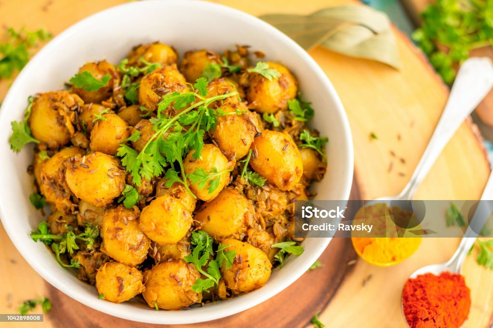

Dum Aloo

Description
A version of this dish is cooked in almost every Indian family – this
particular recipe with new potatoes comes from Asma Khan, chef-patron of
Darjeeling Express. Serve with fried bread such as puris.
Ingredients
- 1 tsp cumin seeds
- 2 cloves
- 2 green cardamon pods
- 1 tbsp ground almonds
- ½ tbsp desiccated coconut
- 4 cloves garlic, chopped
- 2 green chillies, deseeded and chopped
- 6 tbsp vegetable oil
- 750g new potaotes, pricked all over with a fork
- 1 small onion, finely chopped
- ½ tsp ground turmeric
- 180g greek yogurt
- a handful coriander, chopped, to serve
Follow these steps to make a delicious spiced potato curry:
-
Toast the following spices in a small pan until lightly browned:
- Cumin seeds
- Cloves
- Cardamom pods
- Ground almonds
- Coconut
- Sesame seeds
Grind them into a powder.
-
Make a purée by blending the following ingredients:
- Ginger
- Garlic
- Green chillies
- 4 tbsp of water
Mix the purée with the spice powder.
-
Heat oil in a large, non-stick wok or frying pan.
- Fry the potatoes until golden all over (about 10 minutes).
- Add onions and fry until soft and golden.
-
Add the purée mixture, along with seasoning, ground turmeric,
yogurt, and 300ml of water.
-
Simmer with the lid on for 20 minutes or until the potatoes are
tender.
-
Remove the lid and simmer for an additional 10-15 minutes until the
sauce thickens.